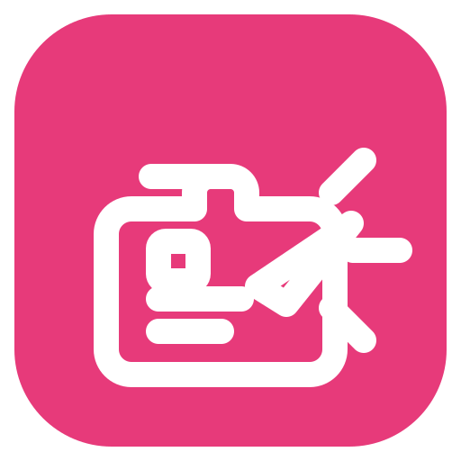
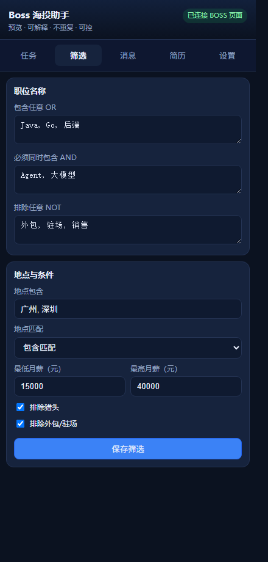
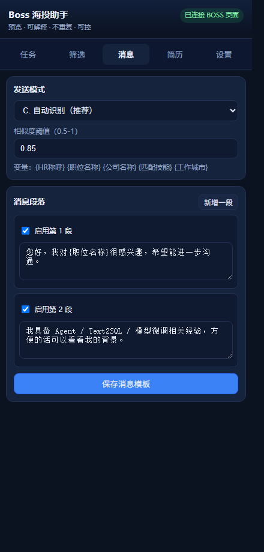
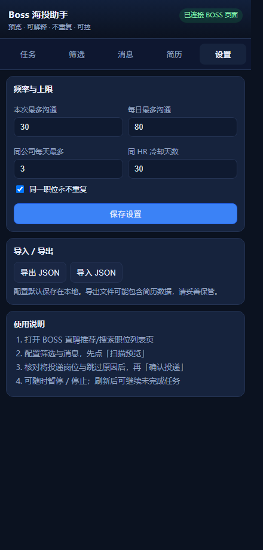
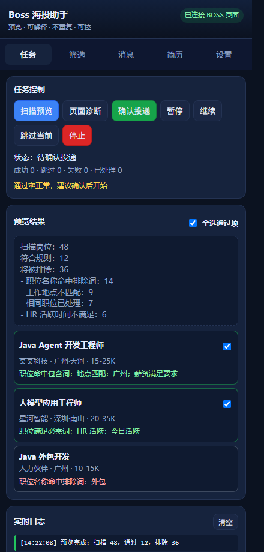

BOSS 直聘网页端的职位筛选、投递确认、分段消息和简历发送助手
大家好，今天带大家快速上手 Boss 海投助手。这是一款 BOSS 直聘网页端的职位筛选、批量沟通和简历发送助手。看完这个教程，你就能在 3 分钟内完成配置并开始使用。
github.com/gstranded/autocast-boss-assistantautocast-boss-haitou-vX.Y.Z.zipchrome://extensions 回车extension 文件夹首先，打开 GitHub 仓库，点击 Releases，下载最新版本的压缩包。下载完成后解压到任意文件夹。
接着打开 Chrome 浏览器，在地址栏输入 chrome://extensions 回车。打开右上角的"开发者模式"开关，然后点击"加载已解压的扩展程序"，选择刚才解压出来的 extension 文件夹。
看到扩展列表中出现 Boss 海投助手的图标，就说明安装成功了。
edge://extensions，操作完全相同。
www.zhipin.com/web/geek/jobsF5 刷新页面安装好之后，打开 BOSS 直聘的职位列表页，确保你已经登录。刷新一下页面，你会看到页面右侧出现一个蓝色的悬浮按钮。点击它，侧边面板就会滑出来，这就是我们的操作界面。

Java, Go, 后端外包, 驻场, 代招广州, 深圳15000第一步，我们来配置筛选条件。点击顶部的"筛选"标签。
在"职位名称：包含任意"里填上你想找的职位关键词，多个关键词用逗号隔开，比如 Java、Go、后端，命中任意一个就会通过。
在"排除任意"里填上你不想看到的词，比如外包、驻场、代招，包含这些词的岗位会被自动跳过。
接着设置目标城市，在"地点包含"里填写，比如广州、深圳。再设一个最低月薪，比如 15000，薪资低于这个数的岗位也会被过滤掉。
建议勾选"排除猎头"和"排除外包/驻场"，这两个默认是开启的。如果你还有特别不想投的公司，可以在"公司排除"里加上关键词。

您好，我对贵司的这个岗位很感兴趣，方便进一步沟通吗？我有多年的相关经验，期待与您详聊。3 秒第二步，配置消息模板。点击"消息"标签。
发送模式建议选择"自动识别"，它会自动检查当前对话是否已经发过第一段消息，避免重复发送。
在第 1 段里写上你的打招呼语，比如"您好，我对贵司的这个岗位很感兴趣，方便进一步沟通吗？"
第 2 段可以写一句跟进语，比如"我有多年的相关经验，期待与您详聊。"
段间等待时间建议设 3 秒左右，让消息发送看起来更自然。
第三步，配置简历。点击"简历"标签。
上传一张图片简历后，插件会在沟通文本确认成功后自动发送。BOSS 自带的“发简历”通常要招聘者先回复后才开放，因此插件不再自动点击它。
发送时机建议选择"文本发送完成后立即发送"，这样消息和简历会连贯地发出去。

1（首次测试用）8033第四步，调整安全设置。点击"设置"标签。
第一次使用，强烈建议把"本次最多沟通"改成 1，先测试一份，确认一切正常后再提高上限。
其他参数保持默认就好：每日最多 80 个沟通，同公司每天最多 3 个，连续失败 3 次自动暂停。这些限制都是为了保护你的账号安全。

配置完成后，回到"任务"标签页。确保你的 BOSS 直聘职位列表页是打开的，然后点击"扫描预览"。
插件会读取当前页面的职位信息，按照你设置的筛选条件逐个检查。通过的岗位会显示为绿色，被排除的会显示红色并标注原因，比如"职位名称不匹配"或"薪资低于下限"。
仔细看一下结果，用复选框勾选你确认要投递的岗位。
成功 / 跳过 / 失败现在我们来测试一下。勾选一个通过的岗位，然后点击"投递一份测试"。
插件会自动打开对应的聊天窗口，发送你配置的消息，然后发送简历。你在旁边看着就好，不需要手动操作。
发送完成后，面板底部会汇报结果：成功、跳过、失败各几个。如果显示成功 1，说明整个流程没问题。
10测试通过后，回到设置页，把"本次最多沟通"改成你想要的数量，比如 10 个。
然后回到任务页，重新扫描预览，勾选要投递的岗位，也可以直接点"全选通过项"一键全选。确认无误后，点击"确认投递"，插件就会开始批量处理了。
任务运行过程中，你可以随时控制。点"暂停"会在当前安全步骤结束后停下来；点"继续"从暂停处恢复；"跳过当前"会跳过正在处理的岗位；"停止"会完全结束任务并汇报统计。
下方的日志区域会实时显示每一步的操作详情，方便你排查问题。
最后一个小技巧：在设置页可以导出和导入配置。导出会把你所有的筛选、消息、简历和设置保存成一个 JSON 文件，下次使用时导入就能一键恢复，非常方便。注意导出文件可能包含图片简历数据，不要公开上传。
以上就是 Boss 海投助手的完整使用教程。记住三个原则：先测试再批量、保持保守上限、不要无人看管运行。如果觉得好用，欢迎到 GitHub 给个 Star。有问题可以提 Issue，我们下期见！